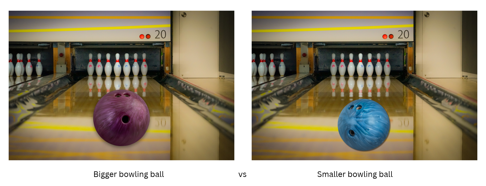

Learn the Fundamentals
Before exploring collisions in space, let's first understand the physics concepts, definitions, and equations that explain how objects move and interact using examples familiar to you down on Earth!
01. What is a Collision?
A collision occcurs when two or more objects interact with each other over a relatively short period of time.
During a collision, objects exert forces on one another, changing their speed, direction, or shape,
depending on their masses, velocities, and the nature of their interaction. Collisions are governed
by the fundamental principles of physics, specifically the conservation of momentum and, sometimes, the conservation of kinetic energy.

The image above shows Newton's cradle. Newton's cradle consists of several identical metal balls suspended by strings.
When one ball is lifted and released, it swings downward and collides with the stationary balls.
The impact transfers momentum and energy through the middle balls, causing the ball at the opposite end to swing outward.
In an ideal setup, this demonstrates how momentum and kinetic energy are transferred during an elastic collision,
where kinetic energy is conserved.
When the ball on the opposite end swings back, the process repeats.
02. Momentum (p)
Momentum is a measure of the motion of an object. It depends on both the object's mass and velocity, meaning that heavier or faster-moving objects generally have greater momentum. Momentum is a vector quantity, so it has both magnitude and direction. During a collision, momentum can be transferred between objects, causing changes in their individual motions. However, the total momentum of an isolated system remains constant as long as no external net force acts on it.

In bowling, a moving bowling ball possesses momentum because of its mass and velocity. A heavier ball moving at the same speed as a lighter ball has greater momentum. When the ball strikes the pins, it transfers momentum to them, causing them to move. This illustrates how momentum depends on both mass and velocity.
Equation:p = mv
where:
• p = momentum (kg·m/s)
• m = mass (kg)
• v = velocity (m/s)
03. Impulse (J)
Impulse describes the effect of a force acting on an object over a period of time. It is equal to the change in an object's momentum. A greater force or a longer interaction time produces a greater impulse, assuming the other variable remains constant. This concept explains why extending the time of impact can reduce the force experienced during a collision, which is an important principle in protective equipment and vehicle safety systems.

When a tennis racket strikes a ball, it applies a force over a short period, changing the ball's momentum. The same principle explains how airbags protect passengers during collisions. By increasing the time over which a passenger's momentum changes, an airbag reduces the average force experienced during impact.
Equations:J = FΔt
J = Δp = m(vբ - vᵢ)
where:
• J = impulse (N·s)
• F = average net force (N)
• Δt = time interval (s)
• Δp = change in momentum
• vᵢ = initial velocity (m/s)
• vբ = final velocity (m/s)
04. Kinetic Energy
Kinetic energy is the energy an object possesses because of its motion. It depends on the object's mass and the square of its velocity, meaning that even a small increase in speed can significantly increase its kinetic energy. During collisions, kinetic energy may be transferred between objects or transformed into other forms of energy, such as heat, sound, and deformation. Whether kinetic energy is conserved depends on the type of collision.

A moving roller coaster possesses kinetic energy, which increases as its speed increases. When it reaches a collision or braking mechanism, some of its kinetic energy may be transferred or transformed into other forms, such as heat and sound. This illustrates why the speed of an object is especially important when analyzing collisions.
Equation:KE = ½mv²
where:
• KE = kinetic energy (J)
• m = mass (kg)
• v = velocity (m/s)
05. Conservation of Momentum
The Law of Conservation of Momentum states that the total momentum of a system remains constant when no external net force acts on it. This means that the combined momentum before a collision must equal the combined momentum after the collision. Although individual objects may change their velocities and directions, the total momentum of the system is preserved. This principle applies to all types of collisions, including elastic and inelastic collisions. We will learn more about the types of collisions at the last part of this lesson!
Equation:m₁v₁ᵢ + m₂v₂ᵢ = m₁v₁բ + m₂v₂բ
where:
• m₁, m₂ = masses of the objects (kg)
• v₁ᵢ, v₂ᵢ = inital velocities (m/s)
• v₁բ, v₂բ = final velocities (m/s)
06. Conservation of Kinetic Energy
The Conservation of Kinetic Energy describes situations in which the total kinetic energy of a system remains unchanged before and after an interaction. Unlike momentum, kinetic energy is not conserved in every collision. In elastic collisions, the total kinetic energy remains constant, while in inelastic collisions, some kinetic energy is converted into other forms of energy. This distinction is important in classifying and understanding different types of collisions.
Equation (for elastic collisions):KEᵢ = KEբ
where:
• m₁, m₂ = masses of the objects (kg)
• v₁ᵢ, v₂ᵢ = inital velocities (m/s)
• v₁բ, v₂բ = final velocities (m/s)
07. Types of Collisions
Collisions are classified according to how kinetic energy behaves during the interaction.
Although momentum is conserved in all collisions involving an isolated system, kinetic energy may or may not remain constant.
A. Elastic Collision
An elastic collision occurs when both momentum and total kinetic energy are conserved.
The objects collide and separate without losing total kinetic energy to permanent deformation, heat, or sound.
An ideal example is the collision between billiard balls, where most of the kinetic energy remains in their motion.
B. Inelastic Collision
An inelastic collision occurs when momentum is conserved but kinetic energy is not.
Some of the initial kinetic energy is transformed into other forms, such as sound, heat, and deformation.
The objects may separate after impact, but their total kinetic energy after the collision is lower than before it.
C. Perfectly Inelastic Collision
A perfectly inelastic collision is a special type of inelastic collision in which the colliding objects stick together and move as one object after impact.
It produces the greatest possible loss of kinetic energy for a given isolated collision system, while still conserving total momentum.
An example is two pieces of clay colliding and joining together.
m₁v₁ᵢ + m₂v₂ᵢ = (m₁ + m₂)vբ
where vբ is the shared final velocity of the two objects.
Why Do Collisions Matter?
Collision physics also helps us develop technologies that make our world more advanced.
Astrophysics and Space Science
As seen in the previous problems, collisions occur on an enormous scale throughout the universe. Asteroids, comets, and other celestial bodies can collide as they travel through space, transferring momentum and energy during impact. These interactions can create impact craters, break objects into smaller fragments, or contribute to the formation of larger planetary bodies. Scientists study these collisions to understand the evolution of planets and the history of the Solar System. One notable example is NASA's Double Asteroid Redirection Test (DART), which demonstrated how a spacecraft impact could change the motion of an asteroid moonlet.
Automotive Engineering and Transportation
Let's focus on applications of collisions down on Earth! Collisions also play an important role in designing safer vehicles and transportation systems. Engineers apply the principles of impulse and momentum to develop safety features such as airbags, seat belts, and crumple zones. These features extend the time over which a passenger's momentum changes during an impact, reducing the average force experienced. Understanding collisions also helps engineers evaluate vehicle structures and improve passenger protection during accidents.
Sports Science
In sports, collisions are essential to understanding how sports equipment and athletes interact! When a tennis racket hits a ball, for example, momentum is transferred from the racket to the ball, changing its velocity and direction. Similarly, when a basketball bounces against the floor, its momentum changes during impact, while some kinetic energy is transferred into sound, heat, and deformation. Sports scientists use these principles to study athletic performance, improve equipment design, and understand the mechanics of different movements.
Materials Science and Industrial Engineering
In materials science and industrial engineering, collision principles help researchers understand how different materials respond to sudden impacts. Engineers perform impact tests to determine a material's ability to absorb energy, resist deformation, and withstand external forces. These tests are important when selecting materials for structures, protective equipment, machinery, and other manufactured products. By studying how materials behave during collisions, engineers can develop products that are more durable, reliable, and resistant to impact damage.